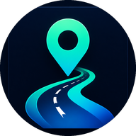

Hedefime Nasıl GiderimOtobüs, metro, tramvay, vapur, tren, uçak — A'dan B'ye en uygun yolu saniyeler içinde bul. Ücretsiz, üyeliksiz, kurulum yok.
🚋 Tramvay + 🚌 Otobüs
Temsili güzergah görseli
Otobüs, metro, tramvay, vapur, tren, uçak — bir rota aramasında hepsini karşılaştır.
Araban veya motosikletin için yakıt tüketimine göre gerçekçi maliyet hesabı.
Duraktaki seferin için alarm kur; 5, 10 veya 15 dakika önce bildirim al.
"Yarın 4 kişi İzmit'ten İzmir'e en ucuz nasıl gideriz?" — sor, rota ve maliyetle cevap al.
Rota adımlarını sesli dinle; yürürken telefona bakmana gerek yok.
Konumuna en yakın durakları ve yaklaşan seferleri canlı gör.
Topluluğun paylaştığı rotaları keşfet, kendi favori güzergahını yayınla.
Rota kullandıkça XP kazan, rozetleri topla, XP ile ek haklar aç.
Kurulum gerekmez — yukarıdaki Tarayıcıda Hemen Dene butonuna bas, konumuna izin ver, rotanı ara. Android uygulaması çok yakında Google Play'de olacak.
50+ ilde hangi otobüs, metro veya tramvay hangi saatte çalışıyor? Detaylı rehberler: